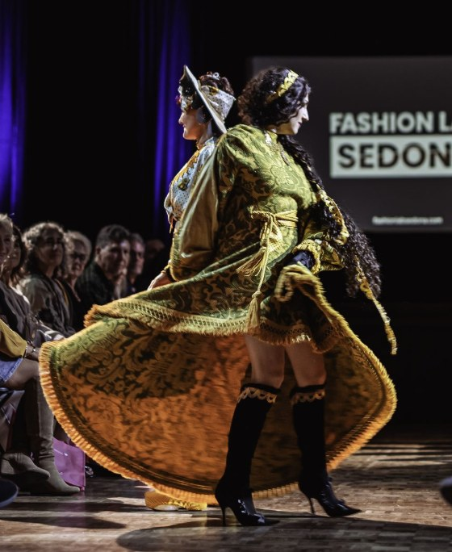

1st place · Sustainable Designer of the Year
Jesselynn Desmond
A Sedona resident, Jesselynn won for two striking reinventions. She transformed her only heirloom from her grandmother, a tablecloth, into a decadent, French couture-inspired design. For her second look, she turned 13 men's diabetic socks into a second-skin, high-waisted bodycon skirt.
Prize: $1,000 in cash and $4,000 in credits for FABRIC, the Tempe fashion incubator. Phoenix Fashion Week founder Brian Hill also gave her tickets to the November 21 Phoenix Fashion Week event.